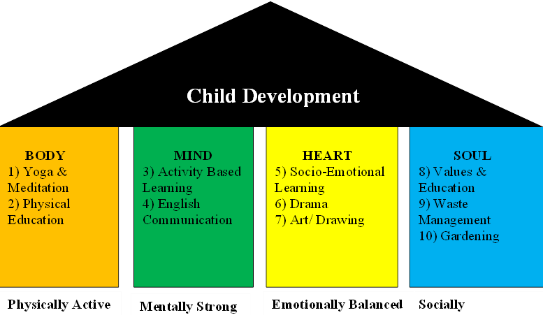

RDT Digital Wholistic School

Supplementary schooling before and after normal school hours. Holiday coaching camps run by the supplementary schools prior to Class VI to ensure student’s competitiveness. Services to help improve reading and writing abilities of primary school students facilitated by educated youth. Wholistic Digital School was established to engage the students in the education without disturbing the normal class hours and without wasting the leisure time of the student in every village. Currently there are around 50 – 150 students being enrolled in the wholistic schools in every village. The village will appoint the common teacher for the school who will take the classes for the students in the village. Community Development Committee (CDC) will recognize the children and provide the education facilities to those in the need. The subjects being taught are Mathematics, EVS, Social Sciences, History, and general science up to class – 5 in every village. The basic purpose of the establishment of this school is to train the students in reading and writing skills and make them outstanding for the future.
School Timings : Morning 6:30 AM to 8:30 AM and Evening 4:00 PM to 6:00 PM
Total no. of working days = 238 = 40 weeks (6days/week)